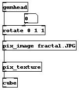

A simple example of texture mapping is the following patch:

This patch can be found at gem_texture/gem1.texture.pd. Change the number box connected to the rotate object to see what a texture map on a cube looks like.
The pix_image object loads in the fractal image file. The pix_texture object says that the pix data should be used as a texture map. Notice that this is different than the previous manual section when we used the pix_draw object. The final object in the chain is the cube object. Because we have enabled texture mapping with the pix_texture object, the cube takes the pix data and applies it to the geometry.
Texture mapping can be used with any GEM object. In the previous manual section, you saw how to load in pix data with a variety of objects, including pix_multiimage and pix_video. All of these objects can be used with the pix_texture object.
Because the pix data is applied to geometry, you can move, rotate, and scale the image. This is extremely useful on the square object. Instead of doing a one-to-one pixel mapping as occurs with the pix_draw object, you can resize and reshape the image.
One major requirement is that all pix data must be a power of two in size. This means that the width and height must be a power of two, such as 64, 128, or 256. If the width or height is not a power of two, then the pix_texture object will not work correctly. If you need to resize your pix data, then the pix_resize object can do the job. However, it is very computationally expensive to use the pix_resize object. It is much better to resize the image before trying to load it into GEM.
The example patch gem_texture/gem2.moveImages.pd is a much more complex patch which uses alpha blending to create a transparent object, in this case, the dancer. Make sure to turn on the rotation with the metro object.